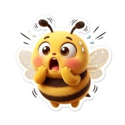
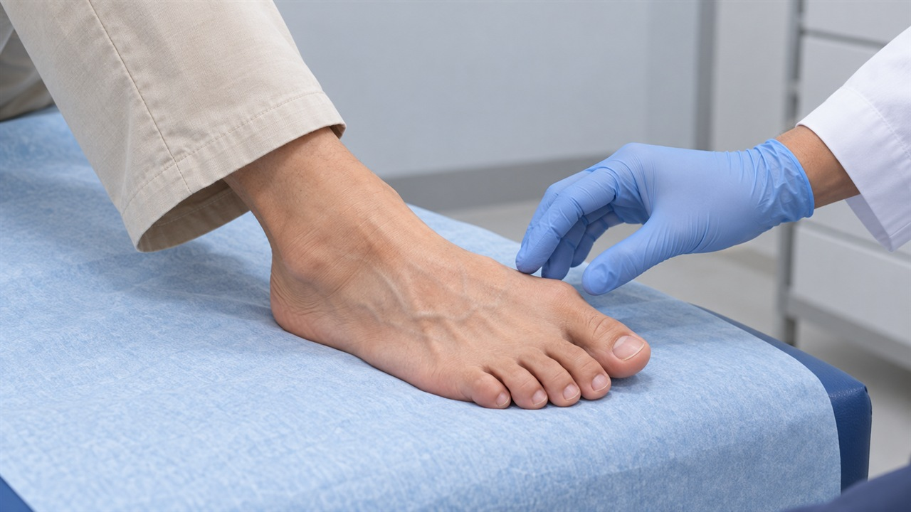
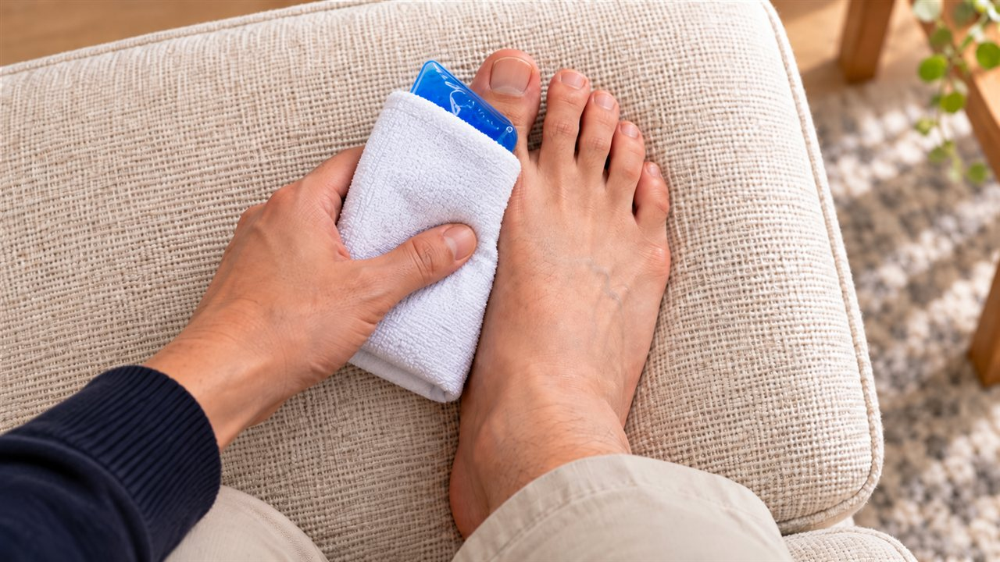
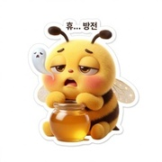
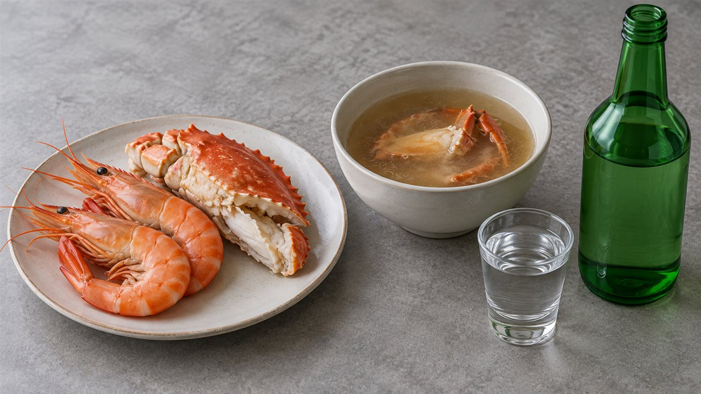

선선한 가을바람과 함께 대하 소금구이나 꽃게찜을 맛있게 즐긴 다음 날 아침,
발가락이 찌릿하게 아파와 깜짝 놀라신 적 있으신가요?
'어젯밤 새우 머리 몇 개 먹었다고 벌써 통풍이 온 걸까?'
'어디 부딪힌 기억도 없는데 발을 디디기조차 힘들 정도로 욱신거리네?'
침대 모서리에 걸터앉아 붉어진 발끝을 보며 덜컥 겁부터 나셨을 겁니다.

해산물을 먹었다고 해서 통증의 원인을 단순히 음식 탓으로 단정할 수는 없습니다.
관절이 붉게 붓고 아픈 증상은 감별해야 할 다른 원인들이 많기 때문입니다.
오늘 에디터 혀니가 갑작스러운 발가락 열감으로 불안하셨을 여러분을 위해
공인 가이드라인에 근거한 올바른 대처법을 차근차근 짚어드릴게요!
| 해산물 먹고 발가락이 아프다고 벌써 통풍일까요?
엄지발가락 관절이 붉게 달아오르고 극심하게 아프다면
단순히 음식 탓으로 넘기기 전에 증상의 양상을 먼저 살피는 편이 좋습니다.
통풍이라고 단정하기 전, 꼭 확인해야 할 중요한 감별 포인트가 있거든요!
관절 부위가 붉게 붓고 열이 나는 증상은 통풍 외에도
세균 감염에 의한 화농성 관절염이나 봉와직염 등 즉각적인 감별이 필요한 신체 이상과 증상이 유사합니다.
세균 감염에 의한 관절염은 방치할 경우 관절 연골 손상이 빠르게 진행될 수 있어
신속한 항생제 처방이 시급할 수 있으므로 스스로 넘겨짚지 않는 편이 좋습니다.

또한 체내 요산 농도는 음식 섭취뿐 아니라 신장의 배설 능력과 체내 상태가 복합적으로 관여합니다.
급성 통풍 발작 중에는 신체 반응과 배설 변화로 인해
혈중 요산 수치가 6.0mg/dL 미만으로 측정되더라도 통풍 가능성을 섣불리 배제할 수 없으므로, 진료실에서 종합적인 진찰을 통해 원인을 살피는 편이 바람직합니다.
![[스티커: 과몰입 돋보기 탐정 꿀벌 🔍]](images/stickers/sticker03_detective.jpg)
| 진료 전 찜질 요령과 아스피린·진통제 복용 시 주의할 점

진료실을 찾기 전 통증이 심하다고 뜨거운 물에 족욕을 하거나 온찜질을 하시면 안 됩니다.
온찜질은 염증 부위의 혈류를 늘려 통증과 부종을 크게 키울 수 있습니다.
![[스티커: 더듬이 꼬인 멘붕 꿀벌 ❓]](images/stickers/sticker04_confused.jpg)
열감이 치솟는 초기에는 온찜질을 피하고
얇은 수건으로 감싼 얼음팩으로 15~20분간 가볍게 대어 열감을 가라앉히는 편이 훨씬 이롭습니다.
약물 복용 시에는 아스피린의 성격을 명확하게 구분짓는 편이 좋습니다.
심혈관 건강을 돌보는 목적으로 처방받은 저용량 아스피린은 주치의 상의 없이 임의 중단하지 말아야 하며,
통증을 줄이겠다고 일반 아스피린을 임의로 추가 복용하는 것은 삼가시는 편이 좋습니다.

진통제를 고를 때도 기존에 진료실에서 미리 안내받은 통풍 발작 대응 계획이 있는 분이 아니라면,
집에 남은 약을 임의로 드시지 마시고 신장이나 위장관 상태에 맞는 처방을 받으셔야 좋습니다.
• 즉각적인 진료 필요 신호: 관절의 극심한 부종과 열감에 더해 오한이나 전신 발열이 동반된다면 단순 관절 이상이 아닐 수 있으므로 지체 없이 응급 진료를 받으셔야 좋습니다.
• 온찜질 및 마사지 금지: 통증 부위를 뜨겁게 하거나 강하게 주무르면 염증 부위 혈류가 늘어 통증이 커질 수 있으므로 삼가시는 편이 좋습니다.
• 진료실 방문 안내: 진통제로 며칠 만에 붓기가 가라앉았다고 안심하지 마시고, 관절 속 요산 결정 관리와 세밀한 상태 파악을 위해 담당 주치의 진찰을 받아보시길 권해드립니다.
![[스티커: 호루라기 비상 경보 꿀벌 🚨]](images/stickers/sticker06_emergency.jpg)
| 통증이 가라앉은 뒤 2주 후 필요한 진짜 요산 검사

새우나 게 등 갑각류는 퓨린과 단백질이 풍부하며,
알코올은 간에서 분해되며 젖산을 만들어 신장의 요산 배설을 일시적으로 방해합니다.
하지만 급성 통증이 호전되었다고 해서 원인 평가를 미루어서는 안 됩니다.
급성기 요산 수치가 6.0mg/dL 미만인데도 통풍 가능성이 짙다면,
선생님의 판단에 따라 발작이 가라앉은 뒤 최소 2주 후 재검사합니다.
첫 진료를 재검사 시점까지 미루지는 마세요.
공인 지침에서 제시하는 혈중 요산 6.0mg/dL 미만 기준은 발작 발생선이 아니라,
확인 후 관절 속 요산염 결정을 서서히 녹여 재발을 막기 위한 장기 관리 목표 수치입니다.
![[스티커: 온몸 젖힌 쌍엄지 척 꿀벌 👍]](images/stickers/sticker07_thumbsup.jpg)
탈수를 막기 위해 미온수를 틈틈이 보충하는 것은 도움이 되지만,
심장이나 신장 상태로 인해 수분 섭취 제한 처방을 받은 분들은 주치의 안내를 우선 따르는 편이 중요합니다.
가을철 별미를 즐기실 때는 과도한 음주와 국물 과식을 조절하시고,
신체 이상이 느껴질 때는 진료실을 찾아 세밀한 확인을 받아보시길 권해드립니다.
여러분은 평소 대하를 드실 때 머리 구이나 탕 국물까지 즐기시나요,
아니면 담백한 몸통 살코기 위주로 드시나요? 댓글로 편하게 경험을 들려주세요 😊
간과 신장 대사를 건강하게 지켜주는 검진 전 생활 습관도 함께 확인해 보세요!
- 국가건강정보포털 — 통풍(Gout) 및 식생활 관리 지침
- 대한류마티스학회 — 한국인 통풍 가이드라인 및 환자 생활수칙 (DOI: 10.3904/kjim.2023.206)
- 미국류마티스학회 (ACR 2020; PMC10563586) — 통풍 관리 지침
- 영국 국립보건연구원 (NICE NG219) — 통풍 판별 및 관리 권고안
- The New England Journal of Medicine (NEJM 2004; PMID: 15014182) — 퓨린 식품과 통풍 위험 역학 연구